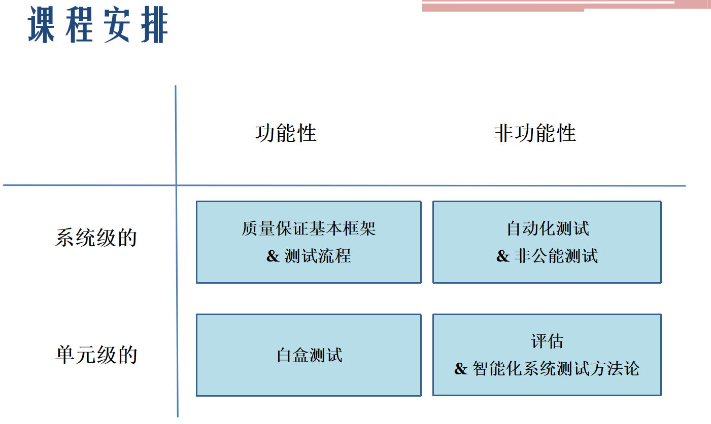
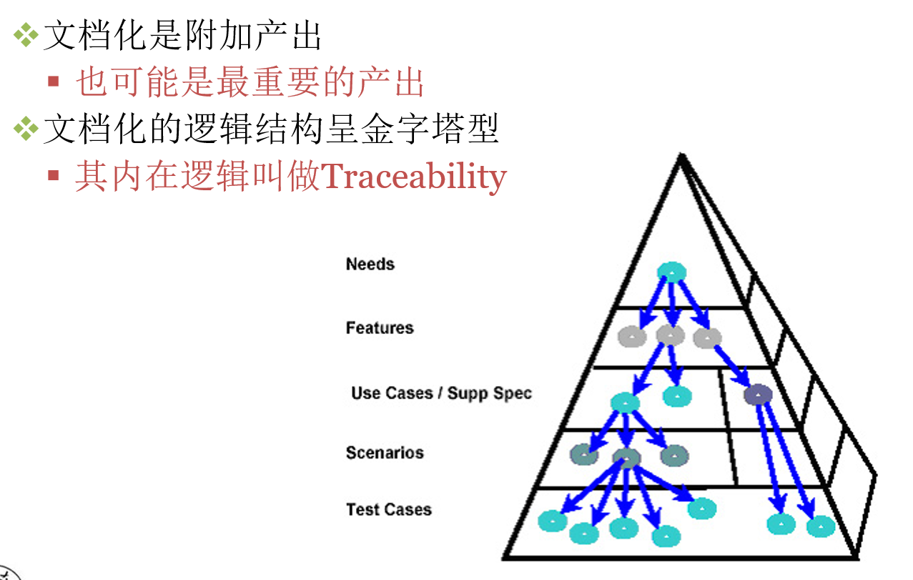

软件测试与质量保证
软工三大狗史课程之一，感觉是锻炼讲故事能力
引言
简单来说，软件测试和质量保证（QA）就像是“体检”与“养生”的关系。虽然大家经常把它们混为一谈，但它们在软件开发中扮演着不同的角色。
软件测试 (Software Testing)
软件测试是产品导向的，属于“事后检验”。它的主要任务是运行软件，发现 Bug，确保软件的行为符合预期的功能。
- 核心逻辑： 通过各种手段（点点点、写脚本）去攻击或使用软件，看看它会不会崩溃，或者结果对不对。
- 动作： 编写测试用例、执行测试、提交 Bug 报告、回归测试（确认 Bug 修复了）。
- 例子： “我点这个登录按钮，系统有没有报错？加载速度快不快？”
质量保证 (Quality Assurance, QA)
QA 是过程导向的，属于“事前预防”。它的目标不是去找具体的 Bug，而是通过改善开发流程，确保“生产软件的方法”是正确的，从而降低出 Bug 的概率。
- 核心逻辑： 只要流程是规范的、评审是严格的、工具是先进的，产出的产品质量自然就有保证。
- 动作： 制定规范、流程审计（Audit）、代码评审（Code Review）、人员培训、选择合适的开发模型。
- 例子： “我们在写代码之前，需求文档是否经过了三方评审？开发人员是否都做了单元测试？”
两者的核心区别
| 维度 | 软件测试 (Testing/QC) | 质量保证 (QA) |
|---|---|---|
| 主要目标 | 发现缺陷 | 预防缺陷 |
| 关注对象 | 产品本身 (Product) | 流程和体系 (Process) |
| 执行阶段 | 主要是开发中后期（代码写好后） | 贯穿整个软件生命周期 |
| 性质 | 被动的、纠正性的 | 主动的、预防性的 |
| 一句话总结 | “这个东西做对了吗？” | “我们做东西的方法对吗？” |
它们是如何协作的？
在实际工作中，它们是包含关系。
- QA（质量保证） 是最大的圆圈，它涵盖了所有为了提高质量而做的管理活动。
- QC（质量控制，包含测试） 是其中的一个环节，通过具体的检查手段来验证 QA 流程的效果。
如果你要开始学习：
- 初级阶段：通常从“软件测试”入手，学习如何写测试用例、如何使用自动化工具。
- 高级阶段：你会慢慢接触到“质量保证”，去思考如何通过改进团队的协作方式、自动化流水线（CI/CD）来全面提升软件质量。
课程安排

系统级 (System Level)
这是站在“用户”和“业务”的角度，观察整个软件系统的表现。
功能性：质量保证基本框架 & 测试流程
- QA 框架： 并不只是找 Bug，而是建立一套规则（比如代码怎么写、文档怎么存），确保开发过程不出乱子。
- 测试流程： 规定了从需求分析、编写测试用例、执行测试到最后提交报告的标准化步骤。
非功能性：自动化测试 & 非功能测试
- 自动化测试： 用脚本代替人工点点点，提高效率，尤其是回归测试（确保改了 A 没坏 B）。
- 非功能测试： 关注系统“好不好用”，比如性能测试（系统能撑住一万人同时在线吗？）、安全性测试（会被黑客攻击吗？）。
单元级 (Unit Level)
这是站在“程序员”和“代码”的角度，深入到系统的零件内部。
功能性：白盒测试 (White-Box Testing)
- 测试人员可以看到源代码。就像修车时打开发动机盖，检查每一个齿轮和电路是否按逻辑运行。
非功能性：评估 & 智能化系统测试方法论
- 评估： 对代码的质量进行打分（比如复杂度是否太高）。
- 智能化方法： 利用 AI 或大数据手段来预测哪些代码块容易出错，或者自动生成复杂的测试数据。
核心概念对比
| 维度 | 功能性 (Functional) | 非功能性 (Non-functional) |
|---|---|---|
| 关注点 | 软件能做什么？(What it does) | 软件运行得如何？(How it performs) |
| 例子 | 点击“登录”能否进入主页 | 登录过程是否在 1 秒内完成 |
| 维度 | 系统级 (System) | 单元级 (Unit) |
|---|---|---|
| 视角 | 外部、黑盒、整体 | 内部、白盒、细节 |
| 目标 | 确保业务流程通畅 | 确保每一行代码逻辑正确 |
软件质量与保证的基本概念
觉得空洞是很正常的，因为基础理论往往比较抽象。为了让知识“落地”，我们需要看那些直接影响工作产出和职业判断的内容。
根据 PPT 的逻辑，最关键、最不空洞的部分其实是缺陷引入的阶段性、McCall 模型的具体指标以及 QA 与测试的本质差异。以下是深度解析：
为什么“提早测试”是金律？（缺陷代价）
这是测试行业存在的根本原因。PPT 中有两组核心数据揭示了残酷的现实：
- 缺陷的源头：大部分 Bug 并不是代码写错了。50% 的缺陷源于需求理解不足，30% 源于设计翻译错误，只有 20% 是真正的编码错误 1。
- 修复代价的爆炸式增长：
- 在需求阶段发现一个逻辑错误，改一下文档可能只需要 $5。
- 在编程阶段发现，需要改代码，成本提升 2。
- 如果到了线上运行阶段（In service）才发现，可能需要停服维护、数据回滚、公关处理，成本飙升至数百甚至数千美元 3。
- 核心结论：测试人员的价值在于“尽早介入”，在需求评审阶段揪出那 50% 的问题 4。
McCall 质量模型：如何具体描述“好”？
当你评价一个软件“质量好”时，不能只说“没 Bug”。PPT 提到的 McCall 模型给了你一套专业术语：
最常用的指标：
- 正确性 (Correctness)：是否完全实现了需求文档里的每一项功能。
- 可靠性 (Reliability)：系统能不能长时间稳定运行，不闪退、不崩溃。
- 易用性 (Usability)：用户学习和操作这个软件需要费多大劲。
容易被忽视但重要的指标：
- 可测试性 (Testability)：这个代码写得好不好测试？如果代码写得像一团乱麻，根本没法拆分测试，那它的质量评价就会降低 8。
- 效率 (Efficiency)：完成同样的功能，你的程序是占了 10MB 内存还是 1GB 内存
QA 与测试：身份的本质区别
在面试或工作中，区分这两个身份非常重要：
测试 (Test) 是“执行者”：
- 目标是发现缺陷。
- 它是产品/交付物导向的，也就是针对已经做出来的东西进行检查。
质量保证 (QA) 是“监督者/建制派”：
- 目标是预防缺陷 。
- 它是过程/策略导向的 13。QA 会问：“我们的开发流程对不对？是不是每个人都做了代码审查？为什么同一个地方总出 Bug？”
- 关系：QA 定义规则，测试在规则下执行验证
评估 (Evaluation)：除了找 Bug 还能做什么？
PPT 强调了 QA 包含“评估”这一重要环节，这比单纯的测试更专业：
需求的评估：用评分模型看需求逻辑是否闭环。
设计的评估：例如“容量规划”，在系统还没做出来前，评估当前的架构能不能支撑未来的用户量。
代码的评估：不运行程序，直接看代码有没有“代码异味（Code Smell）”或不规范的地方。
软件测试的分类
这一部分是软件测试中最核心的“工具箱”。PPT 从三个主要的维度对测试进行了分类，帮你理清在不同阶段、用什么手段去解决什么问题
按测试方法划分（你怎么看被测物？）
这是最基础的分类，决定了你测试时的“视角” 。
- 黑盒测试 (Black-Box Testing)：把程序看作一个黑盒子，完全不看内部代码，只关心输入和输出 3333。主要方法包括等价类划分、边界值分析等 。
- 白盒测试 (White-Box Testing)：测试人员可以看见源代码，关注内部逻辑结构 5555。你会去检查语句覆盖、条件覆盖或路径覆盖，确保每一行代码都跑过。
- 灰盒测试 (Grey-Box Testing)：介于两者之间，既关注接口的输入输出，也参考内部的设计逻辑。
按测试粒度/阶段划分（你在什么时候测？）
这是测试的“层级结构”，通常对应经典的 V 模型 。
-
单元测试 (Unit Test, UT)：最小单位的测试，通常由开发人员编写，针对函数或模块。
-
集成测试 (Integration Test, IT)：把不同的模块拼在一起，测试它们之间的接口是否通畅。
-
系统测试 (System Test, ST)：把整个软件安装到真实环境里，测试整套业务流程。
-
验收测试 (Acceptance Test, AT)：最后关卡，确认软件是否达到了客户最初要求的样子。
按软件评价标准划分（你关注什么品质？）
除了功能对不对，还要看软件“强不强” 。
- 功能性测试 (Functional Test)：验证功能是否按需求实现。
- 性能测试 (Performance Test)：测试高并发下的响应速度和吞吐量。
- 安全性测试 (Security Test)：检查是否存在漏洞、权限泄露等安全隐患。
- 高可用/恢复测试 (Recovery Test)：测试系统崩溃后能不能快速自动恢复。
两个特别重要的“状态”测试
在流程中，这两个词你以后会天天听到：
- 冒烟测试 (Smoke Test)：在正式大规模测试前，先跑一下主流程。如果主流程都挂了，就直接退回版本，不再浪费时间。
- 回归测试 (Regression Test)：当你修复了一个 Bug 或加了新功能后，把以前测过的内容再测一遍，确保没有“改好一个，改坏三个”
\(\alpha\) 测试 vs \(\beta\) 测试
- \(\alpha\) 测试：由开发团队内部在模拟环境下进行，覆盖面广，手段多（黑白盒都有）。
- \(\beta\) 测试：把软件交给真实的最终用户，在真实环境下使用，主要关注功能好不好用（黑盒测试）。
软件开发与测试流程
在 PPT 中，这一块解决的核心问题是：什么时候、什么人、做什么事、产出什么？
流程不仅仅是步骤，它是一套运行方式和产出物定义。
- 消除混乱：定义每个阶段的先后次序、角色分工。
- 质量可控：通过定义“准入准出”标准（Entry/Exit Criteria），确保不把烂摊子甩给下一阶段。
V-Model
这是 PPT 中重点介绍的模型，它最伟大的地方在于建立了开发与测试的对应关系。

Shutterstock
左侧：自顶向下的开发（需求分析 -> 系统设计 -> 详细设计 -> 编码）。
右侧：自底向上的测试验证：
- 单元测试 (Unit Test)：验证代码实现是否符合详细设计。
- 集成测试 (Integration Test)：验证各模块拼接后是否符合概要设计。
- 系统测试 (System Test)：验证整个系统是否符合功能规格说明。
- 验收测试 (Acceptance Test)：验证系统是否真正满足客户的需求协议 (RFP) 。
Test Life Cycle
一个完整的测试流程包含以下具体步骤 ：
-
计划阶段：确定目标、估算人力、制定策略和进度计划 。
-
设计阶段：分析需求的可测性，编写测试用例，设计自动化脚本。
-
执行阶段：搭建环境，进行冒烟测试，然后正式执行测试用例并跟踪 Bug。
-
总结阶段：收集数据，分析覆盖率，编写测试报告，并提出过程改进建议。
核心产出物
PPT 提到，文档化虽然是附加产出，但往往也是最重要的产出 ：
-
测试计划 (Test Plan)：解决“测什么、谁来测、进度如何”的问题。
-
测试用例 (Test Case)：解决“怎么测”的问题（输入、执行步骤、预期结果。
-
测试报告 (Test Report)：解决“现在质量如何、处于什么位置、下一步怎么办”的问题。
产出物的内在逻辑：可追溯性 (Traceability)
这是一个非常专业的概念。PPT 用金字塔模型展示了：
- 每一个测试用例都应该能追溯到一个需求点。
- 如果需求变了，你能立刻知道哪些用例要改；如果某个用例失败了，你能立刻知道哪个业务功能受影响 。

敏捷开发
Note
非常推荐大家看看这个视频 我们都只是在假装着做Agile 讲了敏捷开发的历史和问题
根据 PPT 的内容，敏捷（Agile）概念的提出是为了应对传统瀑布模型在反馈速度和适应性上的不足。敏捷开发强调迭代、协作和快速响应变化。
敏捷开发（Agile）的核心思想
敏捷不仅仅是一种开发方法，更是一系列价值观的集合。
- 短周期迭代：将庞大的项目拆分成多个短小的周期进行交付。
- 协作与沟通：强调跨部门协作、建立清晰的沟通渠道以及定期的团队会议。
- 文档简化：提倡“最少文档（Minimal Documentation）”，将精力集中在可运行的软件上。
Scrum：团队协作的框架
Scrum 是敏捷中最流行的框架，它定义了团队如何高效协作。
-
角色与分工：虽然 PPT 未详列所有角色，但强调了定义角色和分工在流程中的重要性。
-
Sprint（冲刺）：通常为 2-4 周的一个固定周期。
-
核心动作：
-
Product Backlog：待办事项清单（用户故事）
-
Daily Scrum Meeting：每 24 小时进行一次的站立会议，沟通进度和障碍 。
-
Sprint Backlog：本次冲刺要完成的任务清单 。
 Shutterstock
Shutterstock
XP (Extreme Programming, 极限编程)
XP 是一套针对编程实践的敏捷方法论，旨在通过高频率的反馈提高质量。
核心实践：
- Pair Programming（结对编程）：两人一组写代码，互相审计。
- Continuous Integration（持续集成）：频繁地将代码合并到主干并进行自动化测试。
- Refactoring（重构）：在不改变外部行为的前提下优化代码结构。
TDD (Test-Driven Development, 测试驱动开发)
这是敏捷开发中极具颠覆性的测试实践：
- 先写测试，后写代码：在实现功能之前，先编写针对该功能的自动化测试用例。
- 红-绿-重构循环：
- 写一个失败的测试（红色） 。
- 编写最少的代码让测试通过（绿色）。
- 优化代码（重构）。
- 优势：通过测试来指导设计，确保每一行代码都是为了满足需求而写，且生来就有测试覆盖。
Tip
关于最前面b站视频指出的问题，gemini的回答
感觉这些想法太理想化了啊，比如这个daily standup 大家的工作又不是互通的，为啥要知道别人在干啥？而且语音而不是文字交流也是问题，然后这个配对编码，也很难实践，需要很强沟通能力，而且最重要的是，敏捷开发一个周期需要预估开发时间，这个是很难准确估计的
这些痛点正是敏捷开发在实际落地中经常变成“敏捷灾难”的原因。
PPT 中提到的这些方法论（Scrum、XP 等）确实提供了一个理想框架 1，但在现实开发中，它们必须经过大量的调整才能生效。
针对你提出的几个“理想化”疑点，我们可以结合 PPT 中提到的过程改进（Process Improvement）思路来深度解析：
关于 Daily Standup（站立会议）的“互不通”
你说的没错，如果大家各做各的，开会就是浪费时间。但在敏捷的逻辑里：
- 初衷：不是为了“汇报工作”，而是为了发现风险比如，如果 A 发现某底层接口变了，而 B 刚好在调用，这种“互通”就能避免 B 白写一整天的代码。
- PPT 的改进建议：建立清晰的沟通渠道和使用协作工具。如果项目分工完全解耦，确实不需要全员同步，很多团队会改成“小组同步”或者直接在看板上异步查看进度。
关于结对编程（Pair Programming）的门槛
这种模式在 XP（极限编程）中被推崇，但确实极难推广 。
- 现实难点：正如你所说，它对沟通能力要求极高，且两名开发者如果水平差异过大，会变成“一人写，一人看手机”。
- 折中方案：PPT 提到了一些替代手段，比如代码审查（Code Review）*或*静态测试 。与其两个人坐在一起写，不如写完后让别人审查，这样既达到了质量保证（QA）的目的，又降低了沟通成本。
关于“开发时间预估不准”的痼疾
这是软件工程最经典的问题。PPT 在测试流程部分专门提到了测试估算（Test Estimation）和回溯（Backtracking）的概念
敏捷的应对方案：
- 短周期迭代：与其预估一年的计划，不如只预估接下来 2 周（Sprint）的事情。周期越短，误差通常越小。
- 反馈机制：通过定期回顾与反思（Sprint Retrospective），根据上一周期的“实际速度”来调整下一周期的计划。
- 质量评估模型：PPT 提到使用容量规划（Capacity Planning）和基于数据的决策，试图通过数学模型和历史数据来让预估变得相对客观。
流程是为了解决问题，而不是制造问题
PPT 在第 277 页问了一个核心问题：“我们要流程干什么？” 答案是：“为了知道什么时候、什么人、做什么事；以及遇到问题怎么解决。”
如果某个流程（比如 Daily Standup）在你的团队里没解决问题反而制造了麻烦，那就属于 PPT 提到的过程改进范畴——你需要根据团队现状去定义工作流
你会发现，测试人员在这个过程中扮演了“定海神针”的角色：
不管开发流程怎么乱、预估怎么不准，只要测试准入准出标准（EC1/EC2）卡死，烂代码就进不来，烂产品就出不去